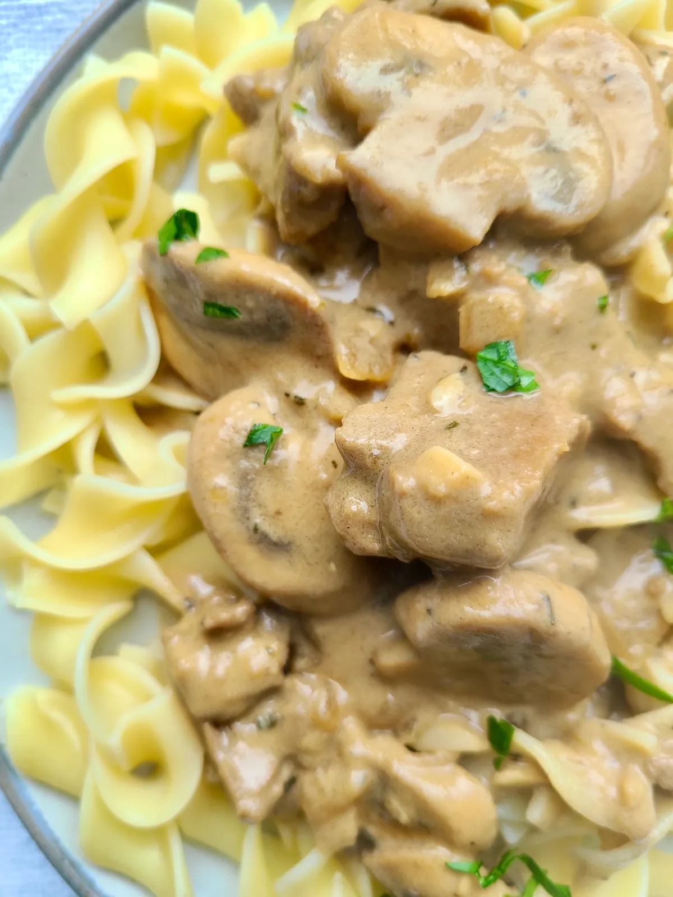

Stroganoff, a delicious dinner option!

Can't get over meat? Well thank god for seitan
Ingredients:
- 12 ounce bag of eggless broad noodles (see note above)
- 3 Tbsp vegan butter
- 1½ cup chopped onion
- 3 cups sliced mushrooms (OR an 8 ounce package of sliced mushrooms)
- 6 garlic cloves, finely chopped
- ½ tsp dried thyme
- 2 cups bite size chunks or thin strips of seitan (store bought or make your own)
- ¼ cup reduced sodium soy sauce (OR gluten free tamari)
- 1 Tbsp vegan Worcestershire sauce (store bought or make your own)
- ⅓ cup tahini (see note above)
- 2 cups water
- 1 Tbsp nutritional yeast
- ½ tsp dijon mustard
- Black pepper, to taste
- 1 Tbsp cornstarch
Instructions:
Follow these steps to make a delicious Stroganoff pasta:
- Fill a large pot with water. Place on the stove, cover with a lid, and bring to a boil. Add the egg-free broad noodles. Stir. Boil uncovered for 7-8 minutes, or according to the directions on the package. Drain, rinse and set aside.
- It will take a long time for the pot of water to boil. While you wait, get started on the vegan stroganoff sauce. In a large, deep skillet, add 3 Tbsp vegan butter and the onions. Stir around over medium-high heat for ~7 minutes or until the onions are golden.
- Add the sliced mushrooms, garlic, dried thyme, and black pepper (to taste). Stir around for ~5 minutes or until the mushrooms sweat out and soften.
- Add the seitan. Stir around another 5 minutes. The bottom of the skillet will get some browned bits. Add ½ of the soy sauce and scrape the bottom of the skillet with your spatula or spoon until the bits loosen.
- Add the remaining soy sauce, the vegan Worcestershire sauce, tahini, water, nutritional yeast, and dijon mustard. Whisk until everything is well combined.
- Then, whisk in the cornstarch. Keep whisking over medium-high heat until it reaches the consistency you like.
- Taste and adjust seasonings, if necessary (more soy sauce? more vegan Worcestershire?). Serve over egg-free broad noodles.